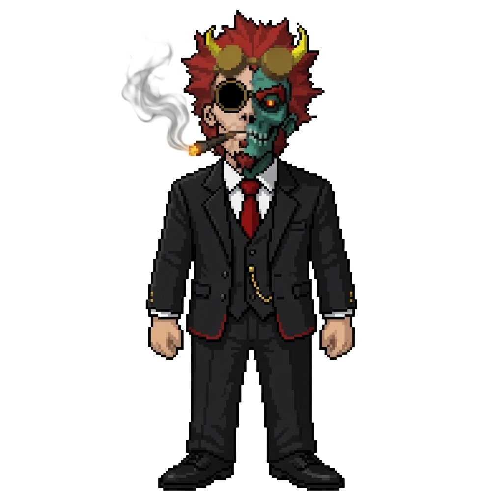
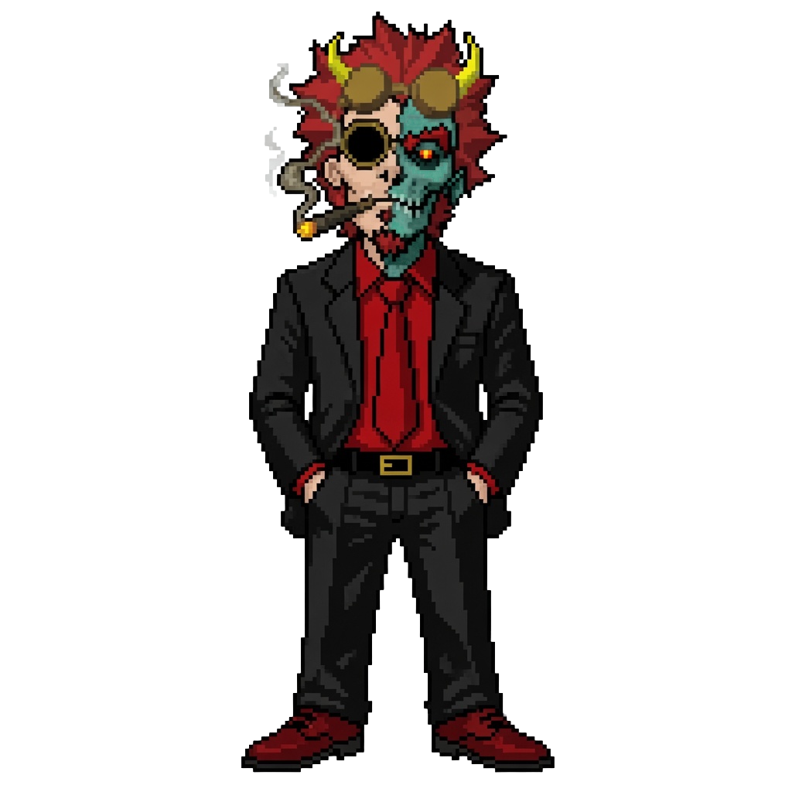
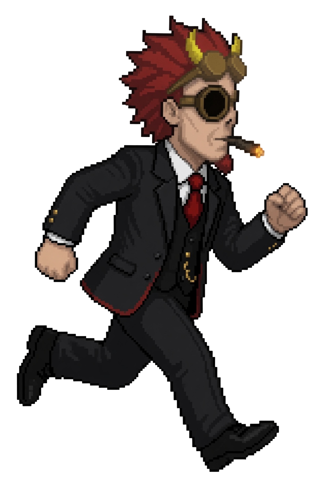
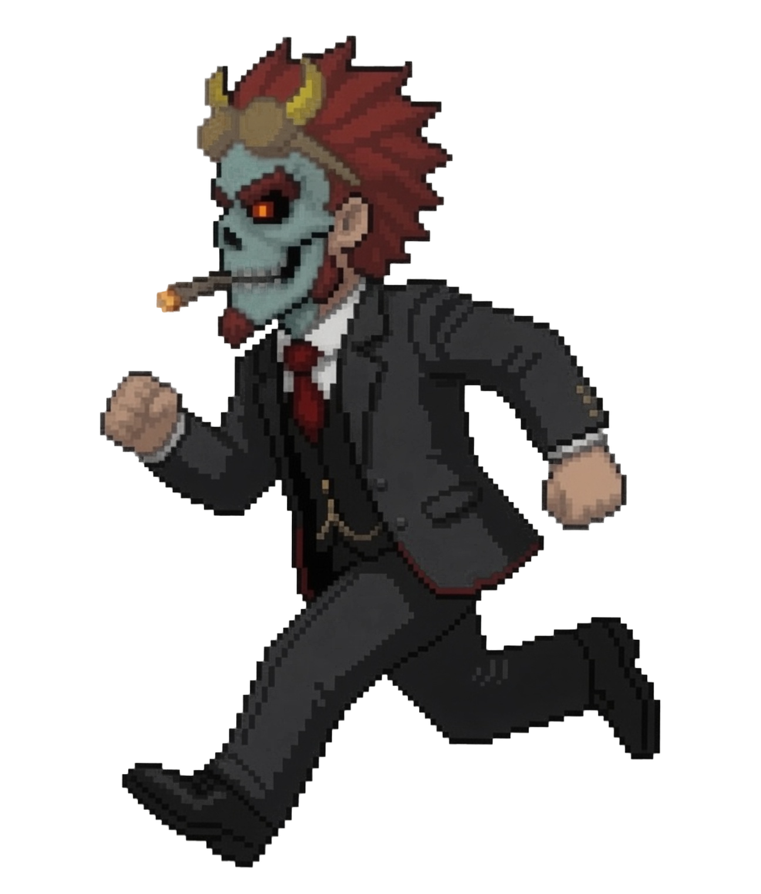
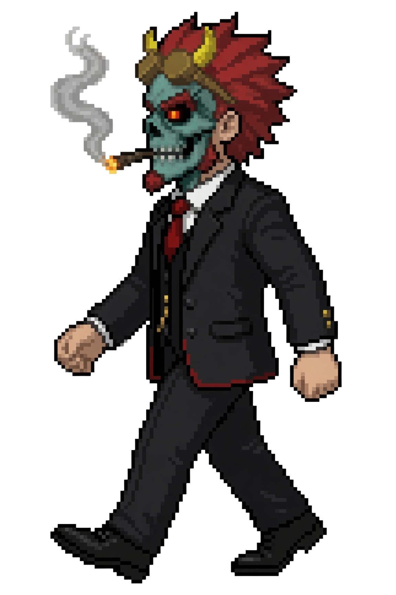
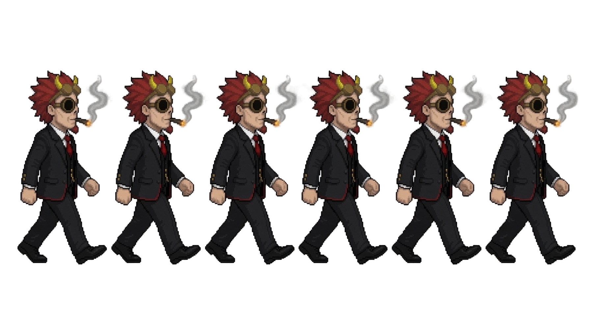
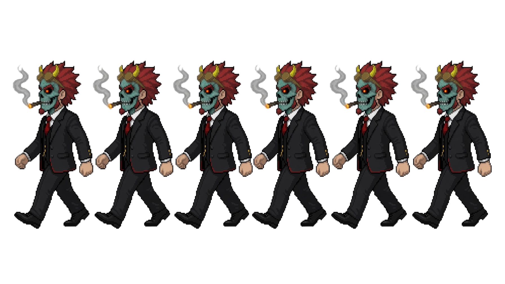

BaldurSecondary spriteBaldurSecondary sprite
BaldurSecondary spriteBaldurSecondary sprite
Standthree-piece · default
Stand · redalt outfit
Run · humanhuman side
Run · zombiezombie side
Walk · zombiekey pose
Walk cycle · human · 6 frames
Walk cycle · zombie · 6 frames